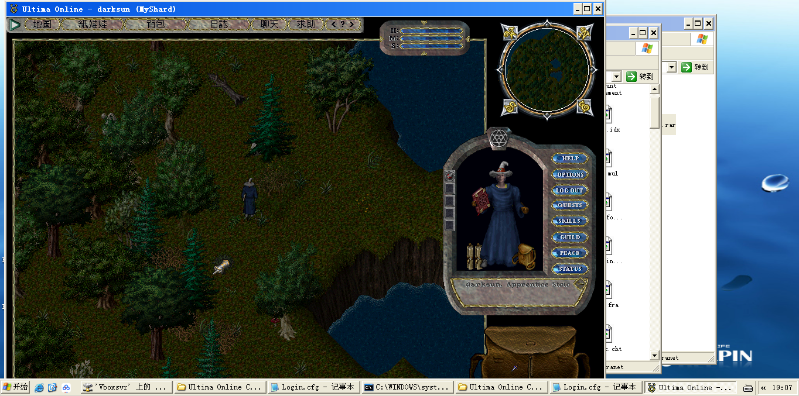

在Linux上搭建UO服务器
早听说 UO(线上创世纪) 是一款神游戏，一直想试试。刚好在网上发现 SphereServer 开源了,遂试着自己搭个私服玩玩。
安装SphereServer步骤：
安装32位的Ubuntu
是的，你没看错，就是的32位的操作系统。因为SphereServer本身是32的应用程序，它会引用32为的libmysqlclient.so,而在64位Linux下似乎已经没有32位的libmysql++库可以安装了。
安装依赖库
apt update && apt install -y libmysql++ unzip
这一步可以通过
ldd命令来检查依赖库# 查看 ERROR: Missing libs ldd spheresvr |grep ERROR
新建一个Sphere目录,用来存放SphereServer的内容
mkdir Sphere cd Sphere下载SphereServer应用和SphereServer Script
wget https://forum.spherecommunity.net/sshare.php?downproj=56 -O Sphere.tar.gz wget https://github.com/Sphereserver/Scripts/archive/master.zip -O scripts.zip将SphereServer应用解压到Sphere目录下，将SphereServer Script解压到Sphere/scripts
tar -zxvf Sphere.tar.gz && rmdir scripts unzip scripts.zip && mv Scripts-master scripts
编辑sphere.ini
主要做下面这些改动:
- 将
ServName改成你的服务器名称 - 将
//MulFile=mul/改成MulFiles=mul/(手工指定mul文件的目录) - 将
AccApp=0改成AccApp=2(任何人可以直接登陆，会自动创建帐号) - 将
UseNoCrypt=0改成UseNoCrypt=1(允许非加密客户端登陆)
- 将
将UO客户端目录中的下列文件拷贝到
Sphere/mul目录下cp multi.idx hues.mul map* multi.mul statics* tiledata.mul staidx* Sphere/mul
创建空的
save和accounts文件echo "[EOF]" > save/sphereworld.scp echo "[EOF]" > save/spheredata.scp echo "[EOF]" > save/spherechars.scp echo "[EOF]" > save/spheremultis.scp echo "[EOF]" > save/spherestatics.scp touch accounts/sphereaccu.scp
启动服务
./spheresrv
使用Docker
为了搭个服务器还得专门装个32位的操作系统，太不划算了，好在我们有Docker啊,而且Docker官方提供32位Ubuntu镜像，简直是太贴心了。
FROM i386/ubuntu ENV DEBIAN_FRONTEND noninteractive RUN apt update && apt install -y libmysql++ unzip && rm -rf /var/lib/apt/lists/* RUN mkdir /Sphere WORKDIR /Sphere ADD https://forum.spherecommunity.net/sshare.php?downproj=56 Sphere.tar.gz ADD https://github.com/Sphereserver/Scripts/archive/master.zip scripts.zip RUN tar -zxvf Sphere.tar.gz && rmdir scripts RUN unzip scripts.zip && mv Scripts-master scripts RUN echo "[eof]">/Sphere/save/sphereworld.scp RUN echo "[eof]">/Sphere/save/spheredata.scp RUN echo "[eof]">/Sphere/save/spherechars.scp RUN echo "[eof]">/Sphere/save/spheremultis.scp RUN echo "[eof]">/Sphere/save/spherestatics.scp RUN touch /Sphere/accounts/sphereaccu.scp EXPOSE 2593 WORKDIR /Sphere ENTRYPOINT ["/Sphere/spheresvr"]
然后准备好 mul 目录和 sphere.ini,再运行
docker run -it --rm -v $(pwd)/sphere.ini:/Sphere/sphere.ini -v $(pwd)/mul:/Sphere/mul -p 2593:2593 sphere
就行了
如何让客户端连接本地服务器
- 修改
Login.cfg,将内容修改为LoginServer=127.0.0.1,2593 运行
client.exe, 注意不要运行uo.exe,这会升级你的客户端，而它的升级在我电脑上是不成功